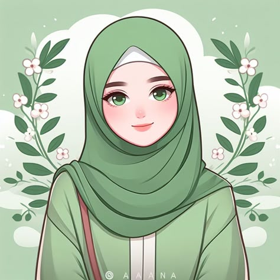

Web Developer
☎ +880 1882 709675
✉ jan.nat1119018@gmail.com
⌂ Cumilla Cantonment , Cumilla , Bangladesh
Bangladesh Army Internation University of Science & Technology
2024 - 2028
HTML & CSS
JavaScript
Communication
WEB DEVELOPER
I am a motivated web developer who enjoys creating simple and attractive websites. I am eager to learn new technologies and improve my programming skills.
2025 - Present
Created simple web pages using HTML and CSS. Worked on page layouts, colors and responsive designs.
2025 - Present
Practiced website design and learned how to organize content using HTML and CSS.
Designed a personal website to display projects, skills and contact information.